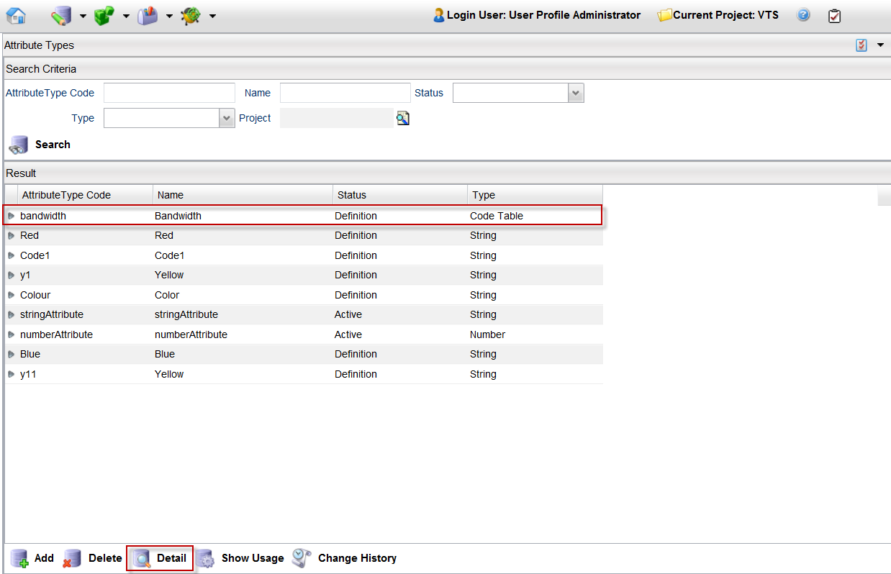
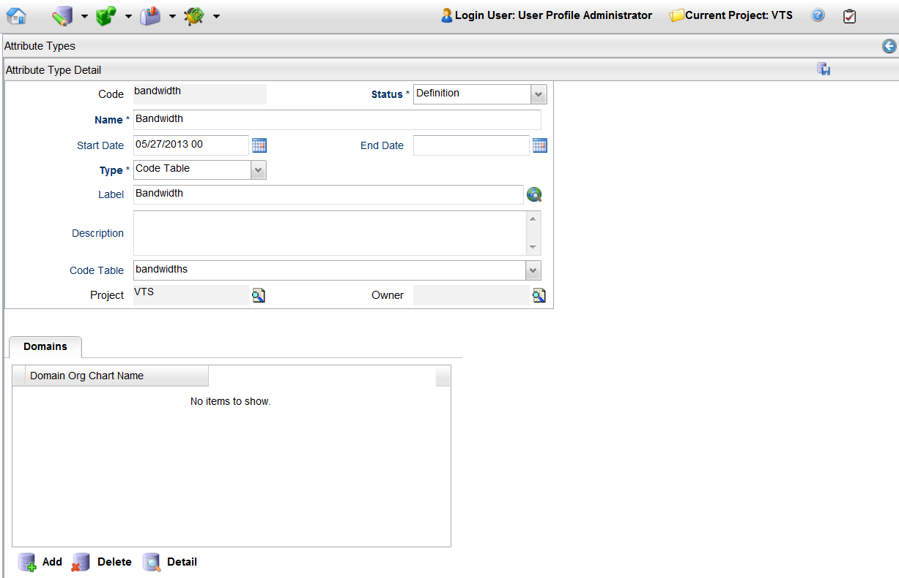

View Attribute Type Details
To view an attribute's details, follow these steps:
Note: A project must be opened to view details of an attribute type.
- From the menu bar, click Designer > Attribute Types.
- Search for all the attributes and select the one you want to delete, or search for a particular attribute.
- Select the attribute (for example, bandwidth) and click the Detail button.

- The Attribute Type Detail page appears.

You can change and save the details of an attribute from this page. Refer to create an attribute type for more information.
Note: You cannot make changes to an attribute that has its Status field set to Active.
|